Columns show normalized τ = 0, 0.5, 1; actual time is scaled by T_end. Rows include every algorithm scheduled by the immutable run plan.
| Algorithm / run status | Start (τ=0) | Midpoint (τ=0.5) | End (τ=1) |
|---|---|---|---|
| branch-and-bound run: run_20261012T042145Z__branch-and-bound__minmax__us-night-0000030.instance-89cc3fc4c0fb__r00__780a9dfc6157 COMPLETED; feasible=True; verified=True (CERTIFIED_CONTINUOUS); optimality=OPTIMAL | 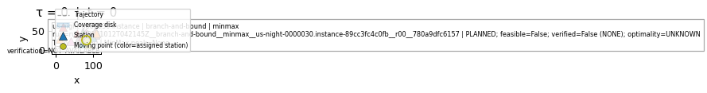 | 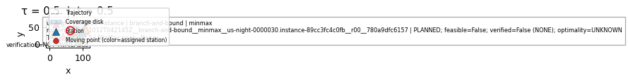 | 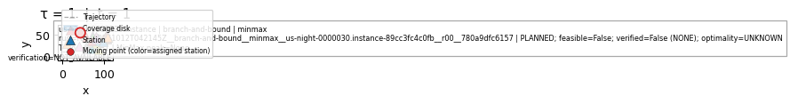 |
| brute-force run: run_20261012T042145Z__brute-force__minmax__us-night-0000030.instance-89cc3fc4c0fb__r00__8ed1be9dd7fc COMPLETED; feasible=True; verified=True (CERTIFIED_CONTINUOUS); optimality=OPTIMAL | 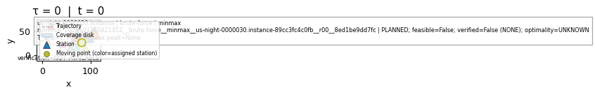 | 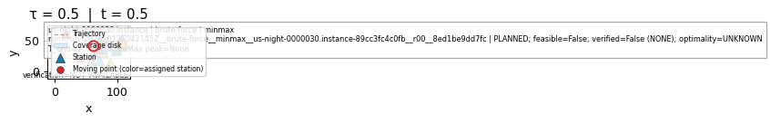 | 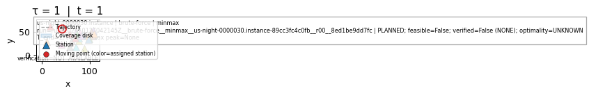 |
| genetic run: run_20261012T042145Z__genetic__minmax__us-night-0000030.instance-89cc3fc4c0fb__r00__1b588d86292f COMPLETED; feasible=True; verified=True (CERTIFIED_CONTINUOUS); optimality=FEASIBLE | 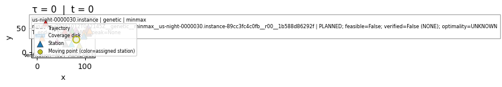 | 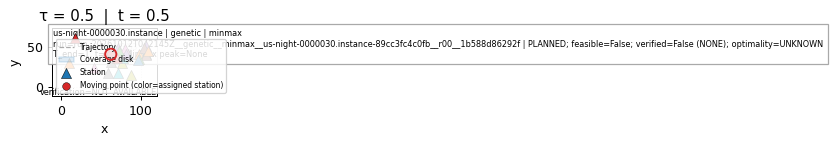 | 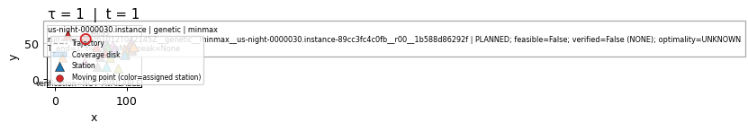 |
| greedy run: run_20261012T042145Z__greedy__minmax__us-night-0000030.instance-89cc3fc4c0fb__r00__ad1948387ce6 COMPLETED; feasible=True; verified=True (CERTIFIED_CONTINUOUS); optimality=FEASIBLE | 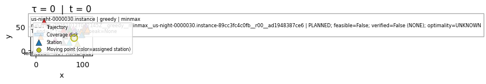 | 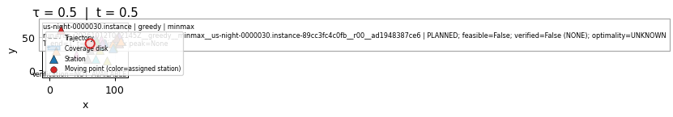 | 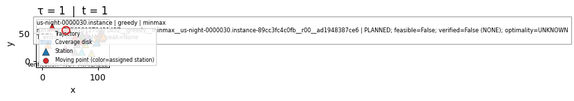 |
| ip-kont run: run_20261012T042937Z__ip-kont__minmax__us-night-0000030.instance-89cc3fc4c0fb__r00__0f3a489a5858 SKIPPED; feasible=False; verified=False (NONE); optimality=UNKNOWN | SKIPPED; feasible=False; verified=False (NONE); optimality=UNKNOWN NO_SOLUTION_ARTIFACT | SKIPPED; feasible=False; verified=False (NONE); optimality=UNKNOWN NO_SOLUTION_ARTIFACT | SKIPPED; feasible=False; verified=False (NONE); optimality=UNKNOWN NO_SOLUTION_ARTIFACT |
| local-search run: run_20261012T042146Z__local-search__minmax__us-night-0000030.instance-89cc3fc4c0fb__r00__085a1c42fc27 COMPLETED; feasible=True; verified=True (CERTIFIED_CONTINUOUS); optimality=FEASIBLE | 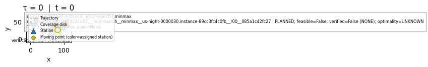 | 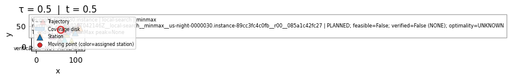 | 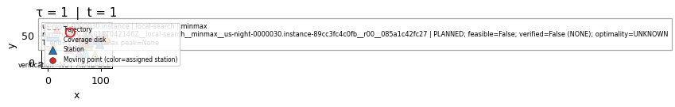 |
| lp-rounding run: run_20261012T042146Z__lp-rounding__minmax__us-night-0000030.instance-89cc3fc4c0fb__r00__a297b587d59d COMPLETED; feasible=True; verified=True (CERTIFIED_CONTINUOUS); optimality=FEASIBLE | 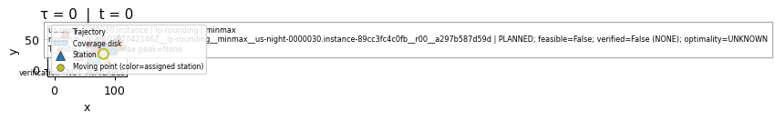 | 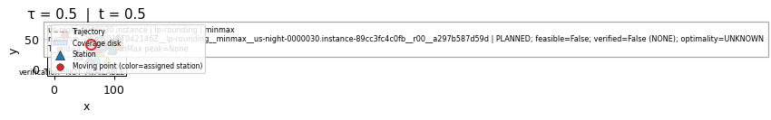 | 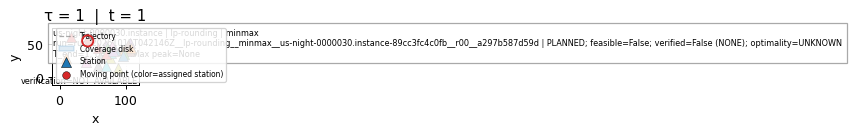 |
| nn run: run_20261012T042146Z__nn__minmax__us-night-0000030.instance-89cc3fc4c0fb__r00__255862e110bb COMPLETED; feasible=True; verified=True (CERTIFIED_CONTINUOUS); optimality=FEASIBLE | 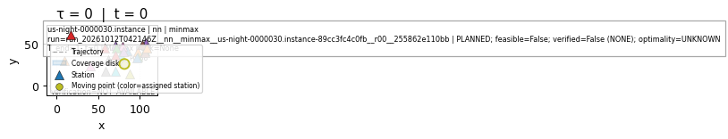 | 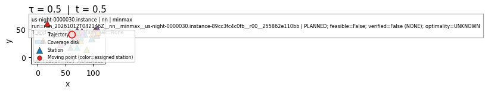 | 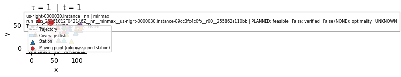 |
| primal-dual run: run_20261012T042146Z__primal-dual__minmax__us-night-0000030.instance-89cc3fc4c0fb__r00__7629c977369a COMPLETED; feasible=True; verified=True (CERTIFIED_CONTINUOUS); optimality=FEASIBLE | 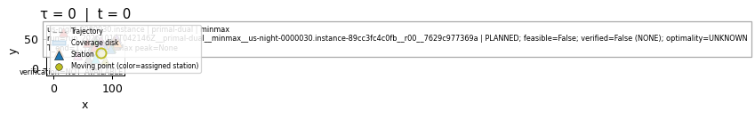 | 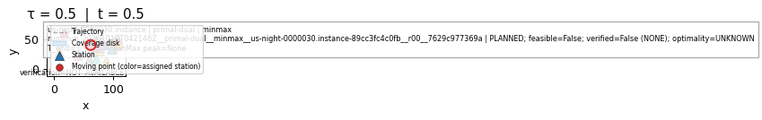 | 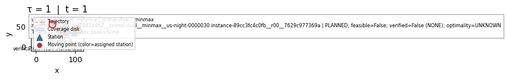 |
| sa run: run_20261012T042146Z__sa__minmax__us-night-0000030.instance-89cc3fc4c0fb__r00__193d06530261 COMPLETED; feasible=True; verified=True (CERTIFIED_CONTINUOUS); optimality=FEASIBLE | 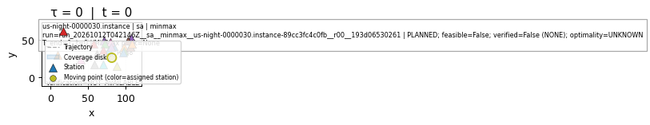 | 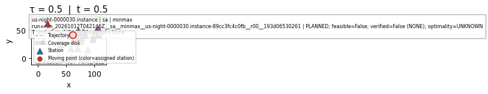 | 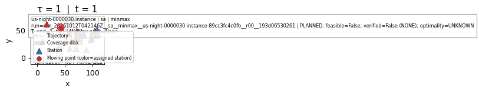 |
| shifting run: run_20261012T042146Z__shifting__minmax__us-night-0000030.instance-89cc3fc4c0fb__r00__426e7a5266dd COMPLETED; feasible=True; verified=True (CERTIFIED_CONTINUOUS); optimality=FEASIBLE | 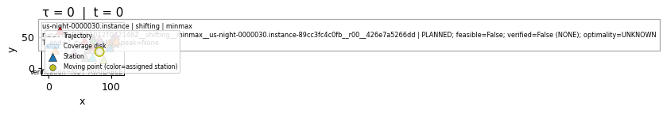 |